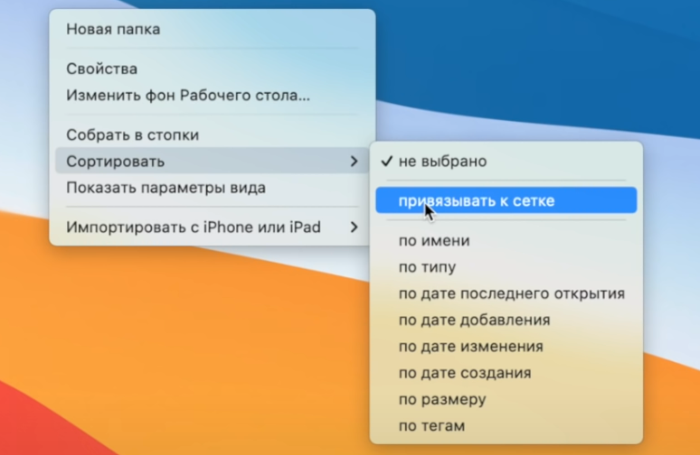
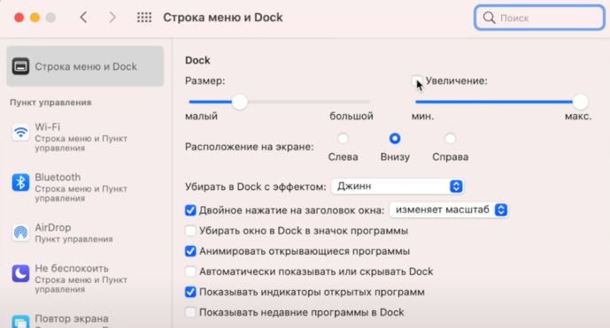

Многие новички негодуют по поводу отсутствия на клавиатуре клавиш Delete и Print Screen. Последней действительно нет, поскольку для скриншотов используется сочетание клавиш — Shift + Command + 3 или одно из других. Начиная с macOS Mojave, скриншоты также можно делать через утилиту «Снимок экрана», которая вызывается сочетанием Shift + Command + 5.
Нападки на клавишу Delete несправедливы, поскольку её нет только на ноутбуках Apple — на полноразмерных клавиатурах Magic Keyboard она всё же присутствует. Впрочем, если на MacBook нажимать стандартную Backspace вместе с клавишей Fn, то она будет работать как Delete.
На самом деле есть, только называется он «Мониторинг системы». Приложение находится в папке «Программы» → «Утилиты» и детально показывает потребление системных ресурсов запущенными программами и процессами. Отсюда же любые из них можно завершить, нажав соответствующую иконку.
Заряд аккумулятора портативного компьютера Mac может не достигать 100 процентов. Обычно аккумулятор, заряженный более чем на 95 процентов, больше не заряжается.
Примечание. Рекомендуется использовать сетевой адаптер, прилагаемый к Mac.
123
123
Нажмите значок аккумулятора в строке меню и выберите «Показать» > «Проценты».
Откройте окно свойств рабочего стола, и в пункте «Сортировать» привяжите по сетке.
Перейдите во вкладку "Строка меню и Dock" и уберите галочку с "Увеличение". Тем самым вы отключите анимацию увеличения инконок открытых приложений.
